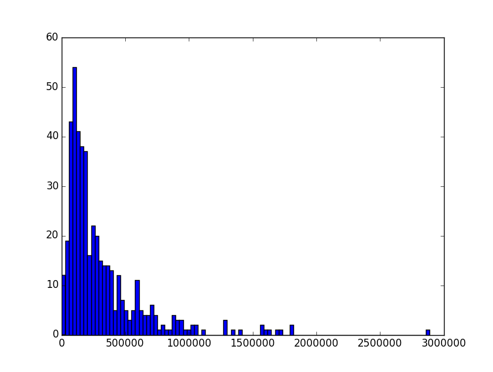
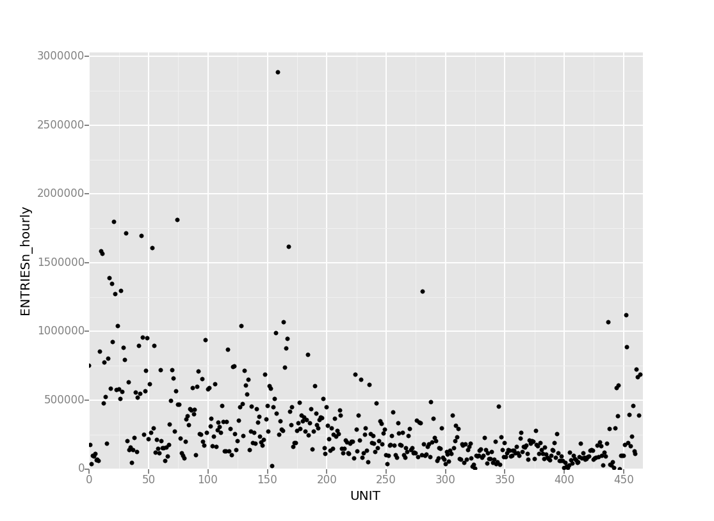
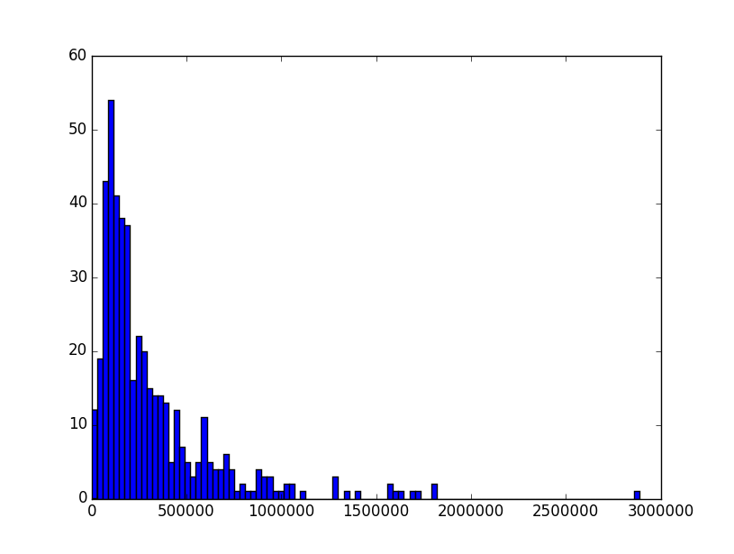
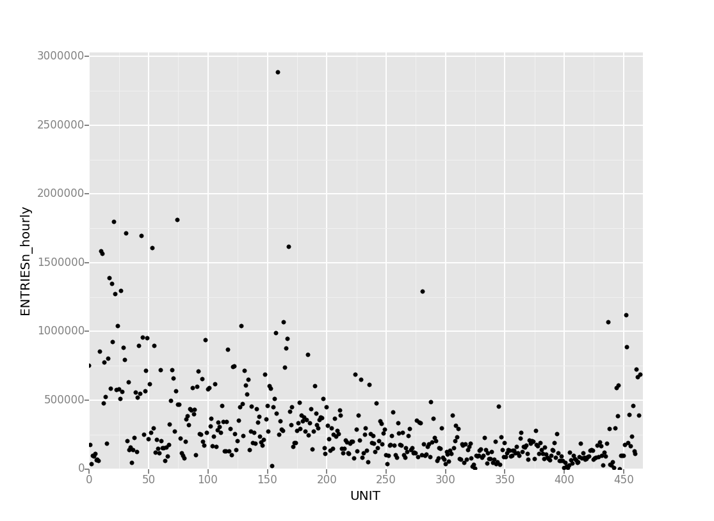

Statistical Test
We used the Mann-Whitney U-test to test the relationship between rain and subway ridership. This was a non-directional test, as it not yet known if rain positively or negatively impacts the subway ridership, thus, a two-tailed test was appropriate with a p-critical value of 0.025. Null hypothesis:
There is no statistical significant correlation between rain and subway ridership.
The dependent variable, the number of entries per hour, is heavily (positively) skewed, and so we had to use a test that allowed for this. Therefore, the Mann-Whiteny U-test was utilized, and not an ordinary T-test.
We calculated the means of subway ridership with and without rain to be 1105 and 1090, respectively. The results were insignificant. With a p-value of 0.02499991, we can now say that there is a correlation between rain and subway ridership.
Linear regression
I used both gradient descent and OLS (using Statsmodels) to produce predictions for ENTRIESn_hourly in my regression model. Both produced exacly (accounting for rounding) the same coefficients.
For features, or input variables, I chose Hour, maximum temperature, meanwindsdpi and rain. Also, a column of 1s was added (intercept) and used dummy variables for the UNIT variable.
From all the variables to choose from, Hour immediately caught my eye as probably being the most influencial. After all, people's traveling habits are generally periodical. Maximum temperature, I believe, is more influential than mean temperature as the mean temperature takes the temperatures at night into account, whereas people more frequently travel when the sun's still shining, especially in May. I chose rain and wind because, judging by own experience, those are the weather conditions that might trigger you to use public transportation.
Taking into account the subway station (by proxy, via UNIT) greatly increased my model's accuracy, but did so at the cost of creating hundreds of additional theta-values. But more importantly, it adds complexity whereas the geographical location is not of importance in any of our big questions. However, it's a crucial statistic in estimating the total number of subway entries given all other variables are known.
After some testing, I found the following values:
| Feature | Parameter |
| Rain | 2.0865 |
| Wind | 59.1678 |
| Hour | 413.8185 |
| Temperature | -13.3750 |
| Intercept | 1102.1463 |
We can see that the specific turnstile unit plays a huge role in predicting the entries on a given hour, with a given temperature, rain, and wind. This is to be expected, as there naturally are busy and not-so-busy stations. Furthermore, an R squared value of 0.5022 is actually pretty high. It appears as if our model has a pretty good fit on the actual data.
Visualization

 



Here's a histogram depicting the turnstile entries (hourly) with both rain and dry weather. Both appear to have roughly the same distribution, albeit not normal, which caused us to use the Mann-Whitney U-test.
Then I've made a graph of subway entries by day, taken over the course of the month of May, 2011. It immediately becomes very clear that day of the week is the driving force behind the subway ridership on any given day. It's a cyclical graph, with minima at Sundays and maxima at Wednesdays and Thursdays. Also notable is the even lower minimum at the last Monday, being Memorial Day.
And then I've made two plots of entries per unit, a scatter plot and a histogram. The scatter plot gives the whole picture, although it's a little hard to comprehend. The histogram, on the other hand, condenses the information somewhat. But in the end, they tell the same story. There's one really busy turnstile unit, then a few moderately busy units and finally a range of units with no notable amount of entries. This is to be expected in a subway system, really.
Conclusion
We can't really be sure, but I think that, especially in the grand scheme of things, it doesn't matter. We've seen from the rain / no rain histogram that the distribution of entries per hour doesn't differ, whereas we would expect at least a small difference if rain was an important predictor.
We did get a significant P-value from out Mann-Whitney U-test, but I believe this is a case where blindly following statistics is not going to get you far. For one, the P-value was incredibly high, about as high as it could get without crossing the P-critical line. In other words, if we had chosen any different value of alpha, we would have found no significant difference between subway ridership with- and without rain. This is reflected in our OLS regression analysis, where rain got a very low parameter indicating it has little effect on the hourly entries.
Reflection
We used a dataset consisting of subway ridership data in the month of May, 2011. This is clearly not representative of the entire year, or even longer periods of time. For example, while rain does not appear to affect subway ridership, this could be because the rains in May are quite mild compared to the storms and snow you could get in January. The same goes for statistics as temperature, and wind.
Because this is an 'Into to..' class, the analysis I used on this dataset is quite rudimentary. For all I know, the relationship between certain statistics is polynomial. I'm afraid I do not yet have enough knowledge about the many statistical tests available to make sound conclusions on the validity of the tests I used.